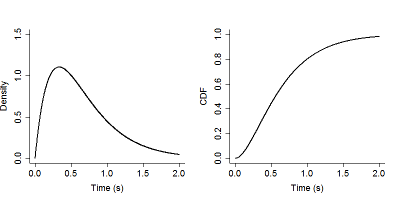
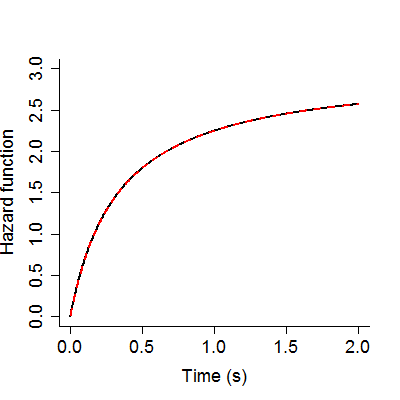
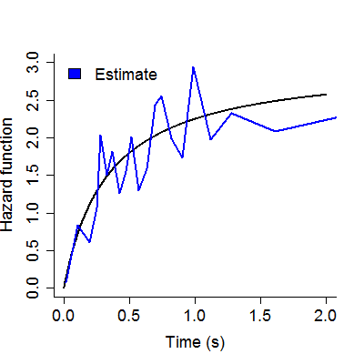

A hazard function gives the likelihood of an event given that it has yet to occur. Hazard functions can be quite informative in distinguishing between response time distributions, but their use is hindered by the fact that they are quite hard to empirically estimate from a set of data. Here, I use some R code to gain some insight into hazard functions, and I also explore an algorithm suggested by Luce (1986) to obtain a smoothed estimate of the hazard function for a set of response times.
For my running example, I will focus on a gamma distribution.
# Define generating parameters (shape and scale parameters)
gp = c( 2, 1/3 )
Given our generating parameter values, we get the following PDF and CDF curves:
# Define a sequence of times
x = seq( 0, 2, length = 1000 )
# Calculate the density function
d = dgamma( x, shape = gp[1], scale = gp[2] )
# Calculate the distribution function
D = pgamma( x, shape = gp[1], scale = gp[2] )
# Plot the resulting curves
layout( cbind( 1, 2 ) )
plot( c(0,2), c(0,1.5), type = 'n', bty = 'l',
xlab = 'Time (s)', ylab = 'Density' )
lines( x, d )
plot( c(0,2), c(0,1), type = 'n', bty = 'l',
xlab = 'Time (s)', ylab = 'CDF' )
lines( x, D )

The hazard function gives the likelihood of an event occurring at time t given that it has failed to occur prior to t. This, then, is the density for t renormalized by the failure of t to have previously occurred, or one minus the distribution function (the log survivor function):
H = d/(1-D)
# Plot the resulting hazard function
plot( c(0,2), c(0,3), type = 'n', bty = 'l',
xlab = 'Time (s)', ylab = 'Hazard function' )
lines( x, H )

An alternate way to specify the hazard function is that it is the negative of the derivative of the log survivor function. This implies that if we calculate the log survivor function over a set of times, and then calculate the difference between the ith observation and the (i-1)th observation for both vectors, we can estimate the derivative via the rise over run equation and see if we obtain our hazard function once again.
lSF = log( 1 - D ) # Log survivor function
H = -diff( lSF ) / diff( x ) # Estimate slope
# Overlay new estimate of hazard function on previous plot
lines( x[-1], H, col = 'red', lty = 2 )

To estimate the hazard function from a set of observations, I will implement equations 4.1 and 4.2 from Luce (1986), which is an algorithm proposed by Miller and Singpurwalla (1977):
eq_4.2 = function( n, k, Z ) {
Z_k = Z[k]
if (k == 1) Z_km1 = 0 else Z_km1 = Z[k-1]
out = ( n - k + 1 ) * ( Z_k - Z_km1 )
return( out )
}
eq_4.1 = function(i,j,n,Z) {
beg = i - j + 1; if (beg < 1) { beg = 1; j = i }
denom = numeric( i - beg )
inc = 1;
for ( k in beg:i ) { denom[inc] = eq_4.2( n, k, Z ); inc = inc + 1 }
out = j/sum( denom )
return( out )
}
To estimate the hazard function using these equations, we specify a set of intervals at which to estimate the hazard function:
n = 1000 # Number of observations
X = rgamma( n, shape = gp[1], scale = gp[2] ) # Observations
Z = sort( X ) # Rank-order observations
q = quantile( Z, prob = seq( .05, .95, .05 ),1) # Determine quantiles
# Determine number of observations less than each quantile
int = sapply( q, function(q) sum( Z < q ) ) # These are our intervals for the equation
int = c(1,int,n-1) # Incorporate first and second to last observations
j = 25 # Specify smoothing parameter
# Estimate hazard function for each interval
est_H = sapply( int, eq_4.1, j = j, n = n, Z = Z )
lines( Z[int], est_H, col = 'blue' )
We can see that the estimate follows the true curve, but is quite jagged. My naive specifications of the intervals and smoothing parameter are clearly not ideal.

References
Luce, R. D. (1986). Response Times: Their Role in Inferring Elementary Mental Organization. New York, New York: Oxford University Press.
Miller, D. R. and Singpurwalla, N. D. (1977). Failure rate estimation using random smoothing. National Technical Information Service, No. AD-A040999/5ST.